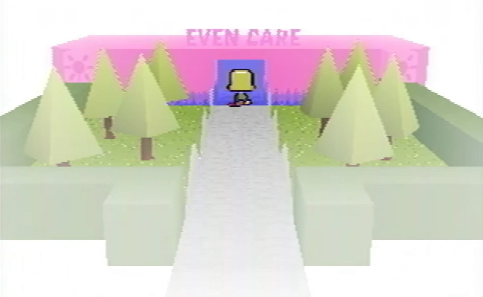
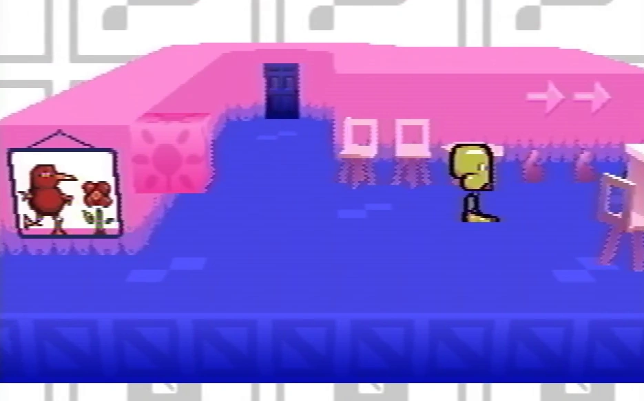
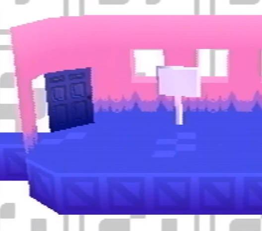
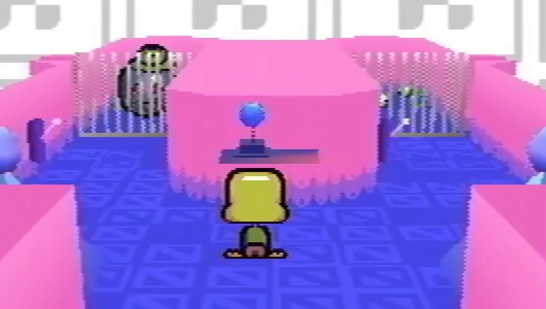
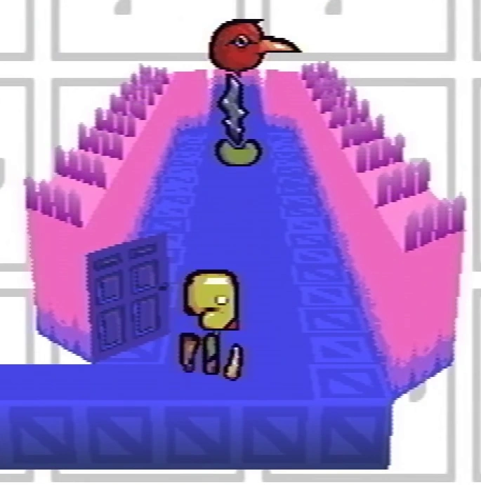
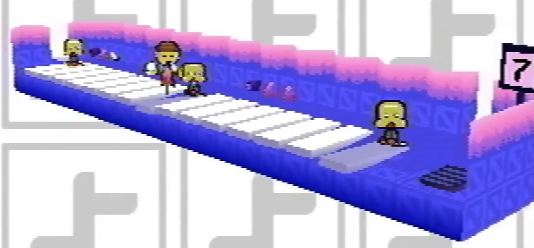
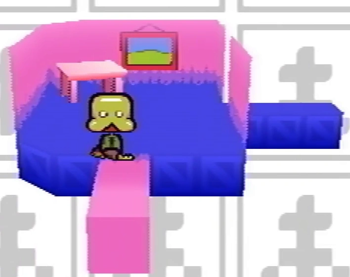
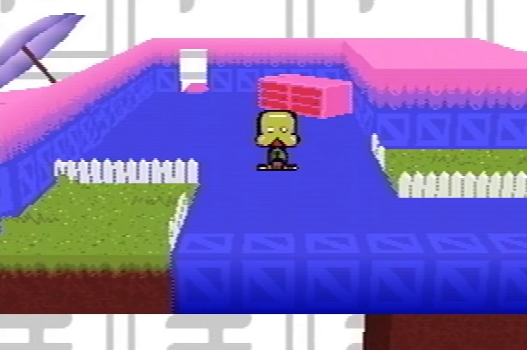
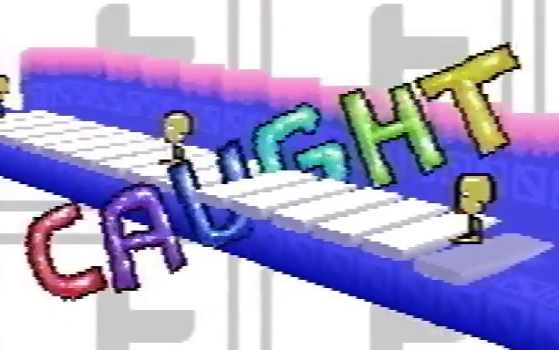
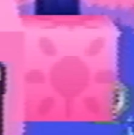

Even Care is the first level of Petscop's overworld, located in the Gift Plane. It is the home to most of the game's main Pets.
Puzzles throughout rooms in Even Care can be solved in any order to catch the following pets:
During Petscop 13, when all five Pets are caught, the following message is displayed to the player:
Congratulations ... you caught every pet in Even Care (aside from Toneth, who isn’t here yet).
You have seen everything in the game, so far, but there will obviously be more.
It's a growing organism.
Your controller inputs will be useful, but your feedback will be even more useful.
Please leave the Playstation on when you leave. You can stand up now.
During Petscop 14, Paul states that this message was different during demo playback, compared to the original session.

The starting room of the level. There is a picture of Toneth and Randice near the entry, and various tables and chairs.
The picture can be interacted with. It reads:
It's a picture of two friends, Toneth and Randice.
Are they not cute? Give them a chance!
The back hall in the room ends in a closed door that can be interacted with. It reads:
This door is locked.
Or not, but you don't know how to open doors.

The second room that connects the starting room with the pets' rooms. There are two signs that can be read.
The first sign reads:
When you're choosing a pet, find somebody that you like.
You don't have to love them right away.
The second sign reads:
Don't be discouraged if they run from you! They really do want a home.
They're afraid. Show them that there's nothing to be afraid of.

The third room that contains Amber. It connects to Roneth's Room and Pen's Room. The back region holds Amber and her cages.
There is a shelf with a trophy in front of the cages that can be interacted with. It reads:
It's a trophy, "awarded to our Amber for being a real champ yesterday and today."
"She hasn't left her cage once!"
The cages are activated by switches outside of each cage door.
This room is connected to the Quitter's Room, though its interactivity is limited to Odd Care.

The fourth room visited that contains Roneth.
The puzzle in Roneth's Room is the only puzzle in Even Care that must be solved using objects from another room.
This room is associated with the archway near the teal tool, in that the teal tool and Roneth move similarly, and are caught using a bucket brought in from another area.

The fifth room visited that contains Pen. It connects to Amber's room and the connector room leading to Randice & Wavey's room.
There is a large piano in the room, along with a treadmill. The treadmill can be used to change the number on its display, of which affects Pen's position transposed on the piano allowing her to be caught.
This room is associated with the Flower Shack's basement, though its interactivity is limited to Odd Care.

The sixth room visited that connects Pen's room with Randice & Wavey's room. It features a table and a picture hanging on the wall.
This room is associated with the tool room. A block featuring its symbol can be viewed in a particular version of the Newmaker Plane in the room in front of the red tool, if using the movable windmill camera.

The seventh room visited that contains Randice and Wavey. There are separated grass beds which mark locations that Randice moves between, and a bucket that spawns between the grass beds. One of the grass beds has dirt that extends downward.
The bucket can be moved around to catch Randice and Wavey. It can also be moved outside of the room, mainly to be moved to Roneth's room to catch Roneth. It presumably respawns after the room is revisited after use.
This room is associated with the house, in that the bucket that appears in these locations must be brought outside of the room to catch some entities. The extending dirt portion is also shown in the loading screen of the garage that is accessed during Strange situation.
Even Care appears differently when set to different gens, and is seemingly the only region of older gens. The gen of the Even Care seen in Petscop 1 is unknown, other than that it is not any gen 2 through 6. There are also other variations of Even Care, though they are not confirmed or known to be related to gens.
"Odd Care" (fan name) is another area similar in design to Even Care that is accessed through the party room. It is initially shown in recording demo playback from Petscop 9.
There is an eighth room that is in Odd Care that is not accessible in Even Care, which the player enters from the Newmaker Plane.
In Petscop 13, during demo playback, Paul states that the message regarding all pets being captured was different in his playthrough, though it has the same amount of text boxes. No music is present.
Gen 2 of Even Care seemingly has older versions of the connector room and Randice & Wavey's room. The connector room has an easel and only one pathway, while Randice & Wavey's room has a different wall texture and various portions missing. An older loading screen appears when loading recordings playing in these rooms. There are no pets and no collision, but an egg can be found.
Gen 3 adds the final player character sprite, collisions, the animated background, music, and the Wavey & Randice puzzle. However, the older room build is retained.

Draw order issues in Gen. 5
Gens 4 & 5 have mostly finished builds of Even Care, with all base pets. Gen 5 changes the music to the current Even Care music. There are still bugs present, such as the "Caught" text appearing behind some objects. The version of the message previously seen in recordings shown in Petscop 13 is also present in Gen 5.
Gen 6 is played by Marvin in Petscop 20, and includes functionality for the the code entered in Roneth's Room. There are differences from the default Even Care, such as the locked door in the reception room missing the line regarding the inability to open doors:
This door is locked.
As shown later, the seeming reason for the second line being missing is since Marvin is capable of opening doors, as he has a prompt to open the door entering to under the Newmaker Plane. However, this may not be a difference applied due to a different gen (see Players).

The name "Even Care" possibly suggests a relation to Care. The level itself has flower imagery (a symbol closely related to Care), as well as the flower pet Randice. "Even" could refer to a state of mind, with Even Care being an emotionally stable version of Care.
It could also be read as part of a question, as in "[Do you] even care?"
The backgrounds of each room feature a particular symbol. These are seemingly in place to offer connections between rooms in Even Care and areas in the Newmaker Plane via the symbol blocks.
| Gift Plane | Gift Plane · Even Care · Odd Care · Work Zone |
|---|---|
| Newmaker Plane | Newmaker Plane · Office · Grave room · Tool room · Quitter's Room · Child Library · Windmill · Party room · House · School |
{kind=link}
{kind=link}
{kind=link}
{kind=link}
{kind=link}
{kind=link}
{kind=link}
{kind=link}
{kind=link}
{kind=link}
{kind=link}
{kind=link}
{kind=link}
{kind=link}
{kind=link}
{kind=link}
{kind=link}
{kind=link}
{kind=link}
{kind=link}
{kind=link}
{kind=link}
{kind=link}
{kind=link}
{kind=link}
{kind=link}
{kind=link}
{kind=link}
{kind=link}
{kind=link}